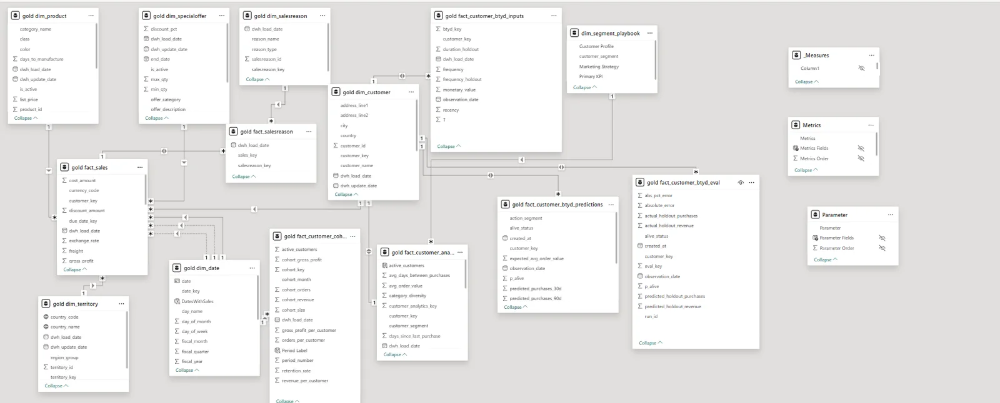
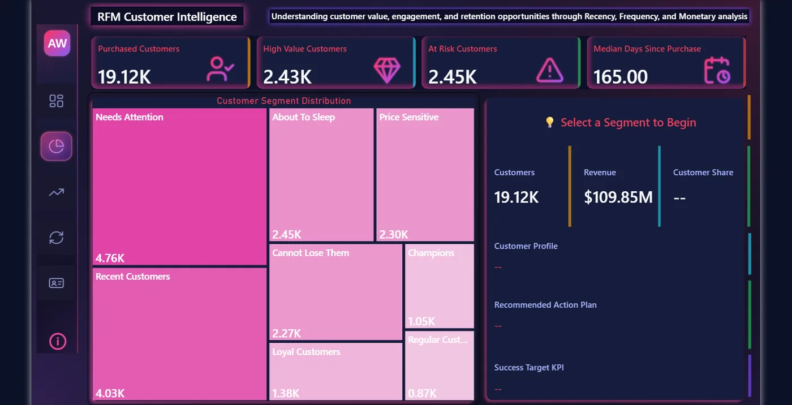
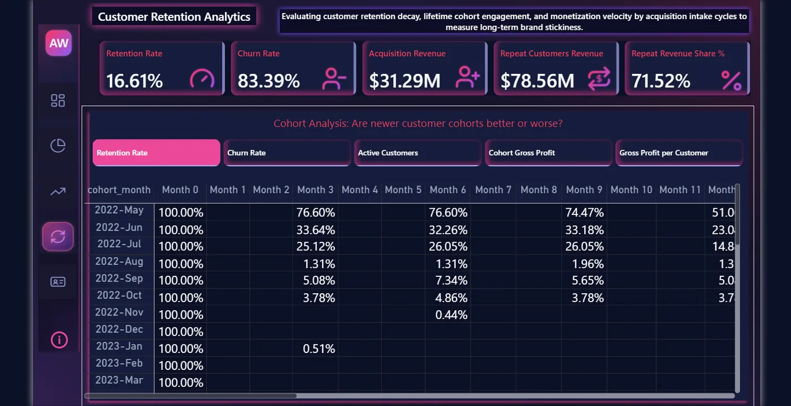
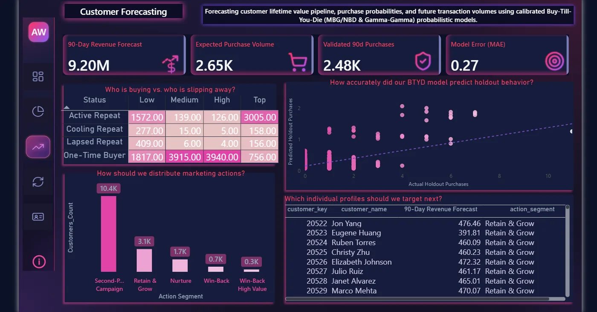

Work / Case study
AdventureWorks 2025: end-to-end customer analytics
From raw ERP transactions to a recommended action for every customer: a layered SQL Server warehouse, a Power BI semantic model, and Python purchase models that were tested against baselines before anyone trusted them.
The problem
Most sales reporting asks which products sell. The Wharton Customer Analytics course argues the better question is which customers create value, because profit comes from customers. I set out to build a platform that treats the customer as the unit of analysis.
Before writing any SQL, I mapped each course framework to a business question and a decision it supports:
- Which customers create long-term value? Decides who to retain and where to spend service effort.
- How different are customers from each other? Decides segment-specific offers.
- Are newer cohorts better or worse? Decides whether acquisition is buying the right customers.
- What will each customer do next? Decides proactive retention and forecasting.
Architecture
A medallion warehouse in SQL Server. Each layer has one job and its own validation script, so a broken number can be traced back to the layer that produced it.
Source
AdventureWorks2025 OLTP. Phase 2 explored metadata, chose the customer-relevant tables and produced a data dictionary and ERD.
OLTP, read-onlyBronze
Raw copy for auditing. One SSIS package loops over the control table dbo.etl_bronze_table_mapping and calls one generic procedure, so adding a table means adding a row, not a pipeline.
17 tables · full loadSilver
EDA on Bronze first, then cleansing and standardisation in proc_load_silver_layer, followed by row-count reconciliation against Bronze.
17 tables · validatedGold
Customer-centric constellation schema: sales, sales reasons, RFM, cohort and three BTYD tables sharing dim_customer and dim_date. One procedure reloads the whole layer.
6 dims · 7 factsModel
Power BI semantic model on Gold, and a Python notebook that reads Gold inputs and writes predictions back to Gold.
60 measures · write-backReports
Executive Summary, RFM Customer Intelligence, Customer Retention, Customer Forecasting, and a customer-level hub.
5 report pagesDesign decision: the original plan used SSAS Tabular. I replaced it with a Power BI semantic model so the model, measures and report live in one tool, which is also what the dashboards actually use.
Semantic model
Every fact table keeps its own grain (order line, customer, cohort month), and no measure mixes grains in one calculation. Business logic lives in measures, not in visuals.

Dashboards
Each page is titled with the question it answers.




Python models, tested honestly
I fitted BG/NBD (purchases) and Gamma-Gamma (order value) to 16,300 customers with a calibration period and a 90-day holdout, then compared them with baselines built from calibration data only.
| Check | Result | Verdict |
|---|---|---|
| Total purchases, 90-day holdout | 2,655 predicted vs 2,475 actual (+7.3%) | close |
| Same rate for everyone baseline | +9.3% on the total | model only slightly better |
| Per-customer error vs each customer's own past rate | MAE 0.267 vs 0.232 | baseline wins |
| Ranking customers (Spearman) | −0.135 | ranked backwards |
| Probability a customer is still active | 1.0 for all customers, 4 variants | not estimable |
| Revenue, 90-day holdout | $9.20M predicted vs $5.64M actual (+63%) | over-forecast |
One-time buyers older than a year bought again at 61%. Newer ones bought again at 8%. BG/NBD cannot see tenure, so it ranked the best group lowest.
Why the models struggled. 61.5% of customers were acquired in the last three quarters, so very few repeat buyers looked like they had left, and the optimizer concluded nobody leaves. Gamma-Gamma assumes frequency and order value are independent; here they correlate at 0.43, which inflated the revenue forecast.
What I shipped instead. A transparent rule-based status (Active, Cooling and Lapsed Repeat, One-Time Buyer), stored next to the forecasts. The probability column is stored as NULL on purpose rather than filled with a number I couldn't defend. I tested every fix I could find (weekly units, Pareto/NBD, repeat buyers only) and documented each one.
Next. A supervised challenger with tenure as a feature, trained on an earlier cutoff and scored on a later one, and any real campaign run against a control group.
What I learned
- A model's total can look right while its rankings are wrong. Checking against a naive baseline caught what the headline number hid.
- Metadata-driven ETL pays off early. Adding a table to Bronze is one row in a control table.
- Writing predictions back to the warehouse keeps one source of truth. Power BI reads forecasts the same way it reads sales.
- Requirements first. Mapping frameworks to decisions in Phase 1 decided which tables, measures and pages were worth building.
AdventureWorks is synthetic, so the method and the pipeline are the point, not the business conclusions.